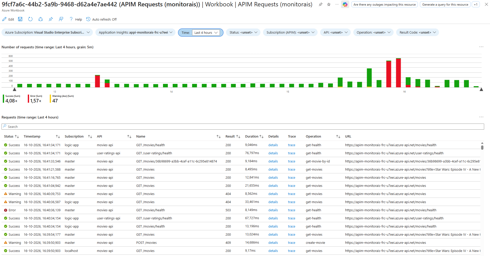

API Management Requests Workbook

When I troubleshoot integrations, I often need to find specific API Management requests. You can find these through Application Insights, but you have to add filters on, for example, the API or subscription every time you look for something. I found that annoying. The results also show very generic request data like the URL and response code. They don’t include API Management specific data like the API, subscription and operation.
In this post, I’ll walk through an Azure Workbook that gives that overview and makes it easy to find requests. I’ll explain how to enable Application Insights logging for API Management and the queries behind the workbook.
This is the third post in my Monitoring Azure Integration Services series.
Table of Contents
- Sample Template
- Workbook Overview
- Enabling Application Insights Logging
- Parameters
- Number of Requests Graph
- Requests Table
- Deploying the Workbook
- Considerations
- Conclusion
Sample Template
I’ve created an Azure Developer CLI (azd) template called Monitor Azure Integration Services to demonstrate different monitoring approaches for Azure Integration Services, including dashboards, workbooks, health checks, alerts and health models. The workbook featured in this post is included in the template. The template has a sample application that lets users manage movies and submit or update ratings. It uses API Management, Azure Functions, Logic App workflows and Azure Service Bus. If you’d like to deploy and try the solution, follow the template’s getting started instructions. The template also includes a demo guide for this workbook.
Workbook Overview
The workbook shows a graph with the number of requests over time per status and a table with the individual requests. Both can be filtered using the parameters at the top.

The definition file is APIM Requests.workbook.
The workbook is similar to the sample workbook I created in Azure Workbook Tips & Tricks. I’m assuming you know a bit about editing Azure Workbooks. If not, have a look at that post first.
Enabling Application Insights Logging
The workbook queries the requests table in Application Insights, so API Management needs to log to it. Here’s a snippet that enables this at the API Management level. See api-management.bicep for the full configuration in the sample template.
resource appInsightsConnectionStringNamedValue 'Microsoft.ApiManagement/service/namedValues@2025-09-01-preview' = {
name: 'appinsights-connection-string'
parent: apiManagementService
properties: {
displayName: 'appinsights-connection-string'
value: appInsights.properties.ConnectionString
}
}
resource apimAppInsightsLogger 'Microsoft.ApiManagement/service/loggers@2025-09-01-preview' = {
name: appInsightsSettings.appInsightsName
parent: apiManagementService
properties: {
loggerType: 'applicationInsights'
credentials: {
connectionString: '{{${appInsightsConnectionStringNamedValue.properties.displayName}}}'
identityClientId: 'SystemAssigned'
}
resourceId: appInsights.id
}
}
resource apimInsightsDiagnostics 'Microsoft.ApiManagement/service/diagnostics@2025-09-01-preview' = {
name: 'applicationinsights'
parent: apiManagementService
properties: {
alwaysLog: 'allErrors'
loggerId: apimAppInsightsLogger.id
httpCorrelationProtocol: 'W3C'
}
}
The snippet does the following:
- The named value stores the Application Insights connection string, so the logger can reference it.
- The logger connects API Management to the Application Insights instance.
- It references the named value using the
{{displayName}}syntax. (IfappInsights.properties.ConnectionStringis referenced directly, a new named value would be created every time a deployment is executed.) - Setting
identityClientIdtoSystemAssignedmakes API Management use its system-assigned managed identity to send telemetry. This requires that the managed identity is enabled and has the Monitoring Metrics Publisher role on the Application Insights resource. See Integrate Azure API Management with Application Insights for details.
- It references the named value using the
- The diagnostics resource specifies what to log to the logger.
alwaysLog: 'allErrors'makes sure failed requests are always logged, even if sampling is configured.httpCorrelationProtocol: 'W3C'enables logging to Application Insights in W3C format, so requests are correlated with the telemetry of the backend services.
Parameters
The workbook has the following parameters at the top:
- Subscription and Application Insights: these let me deploy the workbook once and try it on different environments.
- Time: the time range used by all queries.
- Status: a hardcoded list of statuses (Success, Warning (4xx) and Error).
- Subscription (APIM): a drop-down with the API Management subscriptions used in the selected time range, filtered on the selected statuses.
- API: a drop-down with the APIs that were called in the selected time range, filtered on the selected statuses and subscriptions.
- Operation: a drop-down with the operations that were called, filtered on the selected statuses, subscriptions and APIs.
- Result Code: a drop-down with the result codes returned, filtered on all of the above.
For a more detailed explanation on how to configure parameters in a workbook, see Azure Workbook Tips & Tricks - Parameters.
Number of Requests Graph
The graph displays the number of requests per status over time. This is the query:
let statusFilter = dynamic([{Status}]);
let subscriptionFilter = dynamic([{ApimSubscription}]);
let apiFilter = dynamic([{Api}]);
let operationFilter = dynamic([{Operation}]);
let resultCodeFilter = dynamic([{ResultCode}]);
requests
| where customDimensions["Service Type"] == "API Management"
| where array_length(resultCodeFilter) == 0 or resultCode in (resultCodeFilter)
| extend
status = case(
success==true, 'success',
toint(resultCode) between (400 .. 499), 'warning',
'error'
),
subscription = tostring(customDimensions["Subscription Name"]),
api = tostring(customDimensions["API Name"]),
operation = tostring(customDimensions["Operation Name"])
| where array_length(statusFilter) == 0 or status in (statusFilter)
| where array_length(subscriptionFilter) == 0 or subscription in (subscriptionFilter)
| where array_length(apiFilter) == 0 or api in (apiFilter)
| where array_length(operationFilter) == 0 or operation in (operationFilter)
| make-series numberOfRequests=sum(itemCount) default=0 on timestamp from todatetime("{TimeRange:startISO}") to todatetime("{TimeRange:endISO}") step {TimeRange:grain} by status
The query first turns the multi-select parameters into arrays with dynamic([...]). An empty array means nothing is selected, so the filters only apply when the array isn’t empty.
It then selects the requests logged by API Management. Other services can log requests to the same Application Insights instance, so the query filters on the Service Type custom dimension. The result code filter is applied right away, because resultCode is a regular column.
Next, the query determines the status of each request. A successful request is a success, a 4xx result code is a warning and everything else is an error. I treat client errors as a warning because they don’t necessarily indicate a problem with API Management or the backend. The query also extracts the subscription, API and operation from the custom dimensions that API Management adds to each request. The remaining filters are applied after that, because these values are only known after the extend.
Finally, make-series sums itemCount for each status and creates a time series. This has a few benefits:
- When Application Insights sampling is enabled,
itemCountaccounts for the requests represented by each retained telemetry item, so the graph shows an estimated request count rather than just counting the sampled records. - With
make-series, the graph shows the entire selected period, even if there are no requests at the start or end of the period. Asummarizewithbinwould only return time slots that have data. - The granularity is based on the TimeRange parameter by using
{TimeRange:grain}. This way, the granularity is automatically adjusted depending on the time range you’ve selected in the Time parameter.
I’ve enabled time brushing on this graph, which means you can select a time period in the graph and all data in the workbook will be filtered accordingly. See Azure Workbook Tips & Tricks - Time Brushing for how to configure this.
Requests Table
The table lists the individual requests. This is the query:
let statusFilter = dynamic([{Status}]);
let subscriptionFilter = dynamic([{ApimSubscription}]);
let apiFilter = dynamic([{Api}]);
let operationFilter = dynamic([{Operation}]);
let resultCodeFilter = dynamic([{ResultCode}]);
requests
| where customDimensions["Service Type"] == "API Management"
| where array_length(resultCodeFilter) == 0 or resultCode in (resultCodeFilter)
| extend
status = case(
success==true, 'success',
toint(resultCode) between (400 .. 499), 'warning',
'error'
),
subscription = tostring(customDimensions["Subscription Name"]),
api = tostring(customDimensions["API Name"]),
operation = tostring(customDimensions["Operation Name"])
| where array_length(statusFilter) == 0 or status in (statusFilter)
| where array_length(subscriptionFilter) == 0 or subscription in (subscriptionFilter)
| where array_length(apiFilter) == 0 or api in (apiFilter)
| where array_length(operationFilter) == 0 or operation in (operationFilter)
| project
status,
timestamp,
subscription,
api,
name,
resultCode,
duration,
details = itemId,
trace = itemId,
operation,
url
| sort by timestamp desc
The first part is the same as in the graph query: it selects the API Management requests, determines the status and applies the filters. The difference is the last part, where a project selects and orders the columns for the table:
statusis rendered as an icon.nameis the name Application Insights logs for the request, which is the HTTP method and path.detailsandtraceboth contain theitemIdof the request. The Details link opens the request details in a context pane. The Trace link opens the end-to-end transaction details.subscription,apiandoperationare the API Management specific columns that the standard Application Insights results don’t show.urlcontains the full request URL, unlikename. It may include query parameters when logging them is enabled, which lets you search requests by query-parameter data using the table’s filter field.
The table sorts by timestamp in descending order, so the most recent requests are shown first. I’ve configured the workbook to show a maximum of 1000 rows, so use the filters or time brushing to narrow down the results if needed.
See Azure Workbook Tips & Tricks - Table for more info on configuring, styling and formatting tables.
Deploying the Workbook
I use a generic module to deploy the workbook, as described in Deploy Azure Workbooks with a Reusable Bicep Module. The module is used in this main.bicep of the sample template. Here’s a short snippet:
module apimRequestsWorkbook './modules/workbooks/workbook.bicep' = {
scope: resourceGroup(resourceGroupName)
params: {
environmentName: environmentName
location: location
tags: tags
displayName: 'APIM Requests'
serializedData: string(loadJsonContent('./modules/workbooks/APIM Requests.workbook'))
placeholders: {
AzureSubscriptionId: subscription().subscriptionId
ApplicationInsightsId: appInsights.id
}
sourceId: appInsights.id
}
}
You can also deploy the workbook manually, as described here.
Considerations
When Application Insights sampling is enabled, the graph uses itemCount to estimate the total number of requests represented by the sampled telemetry. The table still shows only the individual requests that were retained, so it can omit requests. The diagnostics resource in the snippet doesn’t configure sampling, so I’m not sampling the requests of my API Management instance. I usually keep it that way. The alwaysLog: 'allErrors' setting makes sure failed requests are logged, but successful requests could still be dropped if sampling is configured. You can check the retained percentage with this query:
union requests, dependencies, pageViews, browserTimings, exceptions, traces
| where timestamp > ago(1d)
| summarize retainedPercentage = 100 / avg(itemCount)
by bin(timestamp, 1h), itemType, cloud_RoleName
Beware that logging every request increases the amount of telemetry, which increases cost as well. API Management doesn’t log as much as, for example, a Logic App workflow does, which logs events for every run, trigger and action. API Management logs a request and, when it calls a backend, a dependency. But on an API with a lot of traffic, this can still add up. Keep an eye on the ingestion volume of your Application Insights instance. If the cost becomes an issue, you can configure a sampling percentage in the diagnostic settings.
Conclusion
Finding specific API Management requests in Application Insights is more work than I want it to be. This workbook solves that with filters on status, subscription, API, operation and result code, a graph for the trend and a table with API Management specific data. The Trace link then takes me straight to the end-to-end transaction details.
The workbook is a starting point. You can adjust the parameters, columns and queries to fit your own APIs.
In my next post, I’ll cover the APIM Insights workbook. It gives further insights into API Management with capacity and autoscale graphs, graphs with the number of requests and the request duration and details about individual operations.